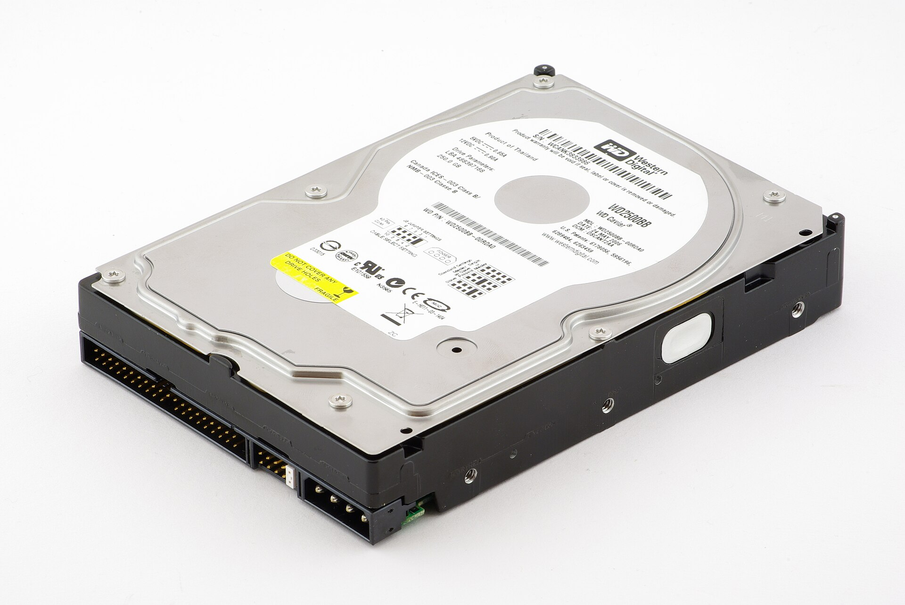

Disco externo USB que dorme e não acorda maisDisabling the spin-down function of an external drive
Alguns anos atrás fui agraciado com a doação de um conjunto WD My Book com dois discos. Pesado e nada portátil, sempre foi o meu candidato perfeito para um NAS. Só que houve uma época em que espaço na nuvem era praticamente de graça, e confesso que quase descartei o conjunto. Ainda bem que não o fiz. Em pleno 2026, um HD de 2006 custa mais do que eu paguei por ele: a corrida por recursos para IA fez subir o preço de tudo, de memória a disco.A few years ago I was gifted a WD My Book with two disks. Heavy and anything but portable, it was always my perfect NAS candidate. But there was a time when cloud storage was practically free, and I confess I almost threw it away. Good thing I didn’t. In 2026, a hard drive from 2006 costs more than I paid for it: the race for AI hardware pushed up the price of everything, from memory to disks.


Ainda bem que eu tinha esses discos para expandir a minha própria nuvem. Mas a doação não veio de graça. O My Book já tinha a fama de dormir e não acordar mais, e o meu ainda era intermitente, provavelmente um capacitor em curto na placa. Comprei então uma gaveta USB nova, de duas baias, com o chip JMicron JMS561, coloquei os discos lá dentro e pus tudo para trabalhar.Good thing I had those disks to expand my own cloud. But the gift came with a catch. The My Book already had a reputation for falling asleep and never waking up, and mine was also intermittent, probably a shorted capacitor on the board. So I bought a new two-bay USB enclosure with the JMicron JMS561 chip, moved the disks into it and put them to work.
A alegria durou poucoThe joy did not last long
Depois de uns minutos sem uso, a gaveta nova mandava os discos dormirem. E eles não voltavam de jeito nenhum. A próxima leitura travava, o kernel reclamava e a única saída era tirar a gaveta da tomada:After a few idle minutes, the new enclosure put the disks to sleep. And they would not come back no matter what. The next read hung, the kernel complained, and the only way out was to unplug the enclosure:
kernel: sd 8:0:0:0: [sdd] tag#9 Add. Sense: Logical unit is in process of becoming ready
kernel: I/O error, dev sdd, sector 2048 op 0x0:(READ) flags 0x4800 phys_seg 128 prio class 2Troquei a caixa e o problema veio junto. Procurando, descobri que esse defeito não é exclusivo do My Book nem do JMS561: os fóruns da WD estão cheios de donos de My Book com o mesmo sintoma (1, 2, 3), e relatos parecidos aparecem com gavetas e HDs externos de várias marcas. No Windows e no macOS, as receitas são sempre as mesmas: desligar o Sleep Timer no software do fabricante e depois desinstalar esse software, ou desligar o gerenciamento de energia do sistema (Desligar o disco rígido após: Nunca no Windows, sudo pmset -a disksleep 0 no macOS). E muita gente relata que, mesmo assim, o disco continua dormindo.I changed the box and the problem came along. Searching, I found this defect is not exclusive to the My Book or to the JMS561: WD’s forums are full of My Book owners with the same symptom (1, 2, 3), and similar reports show up for enclosures and external drives of many brands. On Windows and macOS the recipes are always the same: turn off the Sleep Timer in the vendor’s software and then uninstall that software, or disable the system’s power management (Turn off hard disk after: Never on Windows, sudo pmset -a disksleep 0 on macOS). And many people report that, even so, the disk keeps falling asleep.
Depois de muito teste e muita leitura, o diagnóstico ficou claro com uma comparação simples. Quando o computador manda o disco dormir, ele acorda normalmente na leitura seguinte. Quando a gaveta decide dormir sozinha, ele não acorda mais. O problema não estava nos discos nem no Linux: estava no chip que faz a ponte entre o USB e o SATA. Todo disco externo tem um desses lá dentro, e muitos deles têm um timer de standby próprio. Por isso as receitas do Windows e do Mac não resolvem: nenhuma opção de energia do sistema operacional desliga um timer que mora dentro da caixa.After a lot of testing and reading, a simple comparison made the diagnosis clear. When the computer puts the disk to sleep, it wakes up normally on the next read. When the enclosure decides to sleep on its own, it never wakes up. The problem was not in the disks or in Linux: it was in the chip that bridges USB to SATA. Every external drive has one of those inside, and many of them have their own standby timer. That is why the Windows and Mac recipes don’t help: no operating-system power setting turns off a timer that lives inside the box.
Faz sentido. Essas caixas são feitas para transportar arquivos: liga, copia, desliga. Eu queria uma ligada o tempo todo num servidor. Com o diagnóstico em mãos, o plano ficou em duas partes, que servem para qualquer disco externo com esse sintoma:It makes sense. These boxes are made to carry files around: plug in, copy, unplug. I wanted one that stays on all the time attached to a server. With the diagnosis in hand, the plan had two parts, and they apply to any external drive with this symptom:
- Desligar o timer da ponte USB, para a caixa nunca mais decidir dormir sozinha.Turn off the USB bridge’s timer, so the box never decides to sleep on its own again.
- Deixar o computador decidir quando os discos dormem e quando acordam.Let the computer decide when the disks sleep and when they wake up.
Parte 1: desligando o timer da ponte USBPart 1: turning off the USB bridge’s timer
Onde fica esse timerWhere the timer lives
O Linux enxerga um disco USB como um disco SCSI. E o padrão SCSI tem um lugar oficial para os timers de energia: a página de modo Power Condition (página 0x1A). Uma página de modo é uma pequena tabela de configurações que o dispositivo expõe; o computador pode lê-la com o comando MODE SENSE e alterá-la com o comando MODE SELECT. A JMicron tem um utilitário para o JMS561 (JMS561FwUpdate -t 0) que desliga o standby, e foi abrindo esse programa que vi o que ele faz: nada de proprietário, só um MODE SELECT nessa página, pedindo para gravar. Como é padrão, o mesmo caminho vale para outras pontes que implementam essa página.Linux sees a USB disk as a SCSI disk. And the SCSI standard has an official place for power timers: the Power Condition mode page (page 0x1A). A mode page is a small table of settings that the device exposes; the computer can read it with the MODE SENSE command and change it with the MODE SELECT command. JMicron has a utility for the JMS561 (JMS561FwUpdate -t 0) that turns standby off, and by opening that program I saw what it does: nothing proprietary, just a MODE SELECT on that page, asking for it to be saved. Since it is standard, the same path works for other bridges that implement this page.
Achar o disco e ler o timerFind the disk and read the timer
Primeiro, instalar as ferramentas e descobrir o nome do disco (/dev/sdX):First, install the tools and find the disk’s name (/dev/sdX):
O sdparm lê páginas de modo. --page=po escolhe a página Power Condition e --long acrescenta uma descrição de cada campo:sdparm reads mode pages. --page=po selects the Power Condition page and --long adds a description of each field:
$ sudo sdparm --page=po --long /dev/sdX | grep -E 'STANDBY_Z|SZCT'
STANDBY_Z 1 [cha: y, def: 1, sav: 1] Standby_z timer enable
SZCT 6000 [cha: y, def:18000, sav:6000] Standby_z condition timer (100 ms)Como ler: o primeiro número é o valor em uso. Entre colchetes, cha: y diz que o campo pode ser alterado, def é o valor de fábrica e sav é o valor gravado na memória da ponte, que volta toda vez que ela é ligada. STANDBY_Z 1 significa timer de standby ligado; SZCT é o tempo, em unidades de 100 ms. Lá estava o culpado: 6000 × 100 ms = 10 minutos, gravado na gaveta.How to read it: the first number is the value in use. In brackets, cha: y says the field can be changed, def is the factory value and sav is the value saved in the bridge’s memory, which comes back every time it powers on. STANDBY_Z 1 means the standby timer is on; SZCT is the time, in units of 100 ms. There was the culprit: 6000 × 100 ms = 10 minutes, saved in the enclosure.
Montar os bytes do comandoBuild the command’s bytes
O próprio sdparm tem um --set ... --save para mudar esse valor, mas essa ponte recusou. Então mandei o comando “na mão”, com os mesmos bytes que o utilitário da JMicron manda. Um MODE SELECT tem duas partes: o comando (10 bytes, que dizem “vou mandar uma página de modo, grave-a”) e os dados (a página em si, 48 bytes).sdparm itself has --set ... --save to change this value, but this bridge rejected it. So I sent the command “by hand”, with the same bytes JMicron’s utility sends. A MODE SELECT has two parts: the command (10 bytes that say “I am sending a mode page, save it”) and the data (the page itself, 48 bytes).
Os 48 bytes de dados são assim:The 48 data bytes look like this:
| BytesBytes | ValorValue | SignificadoMeaning |
|---|---|---|
| 0–7 | 00 |
cabeçalho; num MODE SELECT ele vai zeradoheader; in a MODE SELECT it is sent as zeros |
| 8 | 1A |
código da página: Power Conditionpage code: Power Condition |
| 9 | 26 |
tamanho do resto da página: 0x26 = 38 bytes (8 + 2 + 38 = 48)length of the rest of the page: 0x26 = 38 bytes (8 + 2 + 38 = 48) |
| 10–47 | 00 |
todos os timers desligados e zerados, inclusive STANDBY_Z e SZCTall timers off and zeroed, including STANDBY_Z and SZCT |
Ou seja, é um arquivo de 48 zeros com dois bytes preenchidos. Esta linha de Python cria esse arquivo: bytearray(48) cria 48 bytes zerados, as duas atribuições preenchem as posições 8 e 9, e o open(...).write(d) grava o resultado em po-standby-off.bin:In other words, it is a file of 48 zeros with two bytes filled in. This Python line creates that file: bytearray(48) creates 48 zeroed bytes, the two assignments fill positions 8 and 9, and open(...).write(d) writes the result to po-standby-off.bin:
Os 10 bytes do comando são 55 01 00 00 00 00 00 00 30 00:The 10 command bytes are 55 01 00 00 00 00 00 00 30 00:
| ByteByte | ValorValue | SignificadoMeaning |
|---|---|---|
| 0 | 55 |
código do MODE SELECT(10)MODE SELECT(10) opcode |
| 1 | 01 |
bit SP (save pages) ligado: grava na memória da ponte, para valer depois de desligarSP (save pages) bit set: save to the bridge’s memory, so it survives power-off |
| 2–6 | 00 |
reservadosreserved |
| 7–8 | 00 30 |
tamanho dos dados: 0x30 = 48 bytesdata length: 0x30 = 48 bytes |
| 9 | 00 |
controlecontrol |
Mandar o comandoSend the command
O sg_raw (do pacote sg3-utils) manda um comando SCSI cru para o dispositivo. -s 48 diz que vamos enviar 48 bytes de dados, -i diz de qual arquivo eles vêm e -v mostra o que foi enviado. Depois, o sdparm confere o resultado. Numa gaveta de duas baias, cada disco aparece como um /dev/sdX próprio, então repita para cada um:sg_raw (from the sg3-utils package) sends a raw SCSI command to the device. -s 48 says we will send 48 data bytes, -i says which file they come from and -v shows what was sent. Then sdparm checks the result. In a two-bay enclosure, each disk shows up as its own /dev/sdX, so repeat it for each one:
STANDBY_Z 0 [cha: y, def: 1, sav: 0] Standby_z timer enableO sav: 0 mostra que o valor foi gravado. Tirei a gaveta da tomada, religuei, e ele continuava lá. Deixei uma hora parada e a leitura voltou em 0,04 s. Para desfazer, se um dia precisar, basta gravar de volta o timer de fábrica: sudo sdparm --set=STANDBY_Z=1,SZCT=6000 --save /dev/sdX.sav: 0 shows the value was saved. I unplugged the enclosure, powered it back on, and it was still there. I left it idle for an hour and a read came back in 0.04 s. To undo it, should I ever need to, just save the factory timer back: sudo sdparm --set=STANDBY_Z=1,SZCT=6000 --save /dev/sdX.
Em outra ponte, o primeiro passo é o mesmo: ler a página com o sdparm. Se STANDBY_Z (ou STANDBY_Y, IDLE_*) estiver em 1 e o sdparm --set ... --save funcionar, nem precisa do sg_raw. Se a ponte não tiver essa página, o timer está em outro lugar, e a parte 2 abaixo continua valendo.On another bridge the first step is the same: read the page with sdparm. If STANDBY_Z (or STANDBY_Y, IDLE_*) is 1 and sdparm --set ... --save works, you don’t even need sg_raw. If the bridge has no such page, the timer lives somewhere else, and part 2 below still applies.
Parte 2: o computador decide quando dormirPart 2: the computer decides when to sleep
Resolvido o travamento, veio o outro lado da moeda: sem o timer, os discos giram o dia inteiro, quentes (59–62 °C) e se desgastando à toa. A ideia nunca foi deixá-los girando para sempre, e sim tirar essa decisão da caixa e entregá-la ao Linux. Quem faz isso é o hd-idle: ele observa o /proc/diskstats (o contador de leituras e escritas de cada disco) e, depois de um tempo sem atividade, manda o comando ATA de standby direto para o disco. Quando chega um acesso, o próprio disco acorda e atende, justamente o caminho que sempre funcionou.With the hang solved came the other side of the coin: without the timer, the disks spin all day, hot (59–62 °C) and wearing out for nothing. The idea was never to keep them spinning forever, but to take that decision away from the box and hand it to Linux. hd-idle does exactly that: it watches /proc/diskstats (each disk’s read and write counters) and, after a while without activity, sends the ATA standby command straight to the disk. When an access arrives, the disk itself wakes up and serves it, which is precisely the path that always worked.
Primeiro, instalar e achar o nome fixo de cada disco. O /dev/sdX pode mudar quando a gaveta é religada; o nome em /dev/disk/by-id/ leva o modelo e o número de série, e não muda:First, install it and find each disk’s fixed name. /dev/sdX can change when the enclosure is reconnected; the name under /dev/disk/by-id/ carries the model and serial number, and does not change:
No arquivo /etc/default/hd-idle:In /etc/default/hd-idle:
START_HD_IDLE=true: liga o serviço (vem desligado de fábrica).START_HD_IDLE=true: enables the service (it ships disabled).-i 0(o primeiro): tempo padrão zero, ou seja, os discos que não estão na lista nunca são parados.-i 0(the first one): default time zero, so disks not on the list are never spun down.-s 1: acompanha o disco mesmo se osdXmudar.-s 1: follows the disk even if itssdXchanges.-l /var/log/hd-idle.log: registra quando cada disco parou e voltou.-l /var/log/hd-idle.log: logs when each disk stopped and came back.-a <disco> -i 1200 -c ata: para esse disco, parar depois de 1200 s (20 minutos) sem uso, usando o comando ATA de standby.-a <disk> -i 1200 -c ata: for this disk, spin down after 1200 s (20 minutes) idle, using the ATA standby command.
Depois, ligar o serviço e acompanhar o log. O reset-failed é necessário porque a instalação tenta subir o serviço antes de ele estar configurado, e o systemd o deixa marcado como falho:Then start the service and follow the log. reset-failed is needed because installing the package tries to start the service before it is configured, and systemd leaves it marked as failed:
Na prova de fogo, o hd-idle parou os dois discos, ouvi o cabeçote recolher, e eles esfriaram 7 °C e 3 °C em dez minutos. Com eles parados, formatei os dois: acordaram sozinhos com a gravação e a formatação terminou sem um único erro. Um detalhe curioso: o LED da gaveta apaga quando o disco para e não acende mais quando ele volta a girar. Ele não indica o estado do disco; para saber, o jeito é olhar o log do hd-idle.In the real test, hd-idle spun down both disks, I heard the heads park, and they cooled by 7 °C and 3 °C in ten minutes. With them stopped, I formatted both: they woke up on their own with the writes and formatting finished without a single error. A curious detail: the enclosure LED goes off when the disk stops and does not come back on when it spins up again. It does not show the disk’s state; to know, check the hd-idle log.
Receita rápidaQuick recipe
Se eu cruzar com um disco externo que dorme e não acorda, é isso que eu faço logo de cara:If I ever come across an external drive that sleeps and never wakes up, this is what I do right away:
lsusb; lsblk -o NAME,TRAN,MODEL,SERIAL # qual ponte, qual sdX / which bridge, which sdX
sudo sdparm --page=po --long /dev/sdX | grep STANDBY_Z # 1 = a ponte vai dormir sozinha / bridge will sleep
python3 -c "d=bytearray(48); d[8]=0x1a; d[9]=0x26; open('po-standby-off.bin','wb').write(d)"
sudo sg_raw -v -s 48 -i po-standby-off.bin /dev/sdX 55 01 00 00 00 00 00 00 30 00 # cada disco / each disk
# desligar e religar a caixa, conferir sav: 0 / power-cycle, check sav: 0
# hd-idle com -c ata para o Linux decidir / hd-idle with -c ata so Linux decidesNo fim, a lição é simples: quando um disco USB dorme e não acorda, pergunte quem mandou dormir. Se foi a caixa, desligue o timer dela e passe essa decisão para o computador. E os discos daquele My Book que quase foi para o lixo vivem de novo, ligados o tempo todo e dormindo só quando o Linux manda.In the end, the lesson is simple: when a USB disk sleeps and never wakes up, ask who put it to sleep. If it was the box, turn its timer off and hand that decision to the computer. And the disks from that My Book that almost went in the trash live again, always on and sleeping only when Linux says so.
Foto da capa: PantheraLeo1359531, Wikimedia Commons, CC BY 4.0.Cover photo: PantheraLeo1359531, Wikimedia Commons, CC BY 4.0.